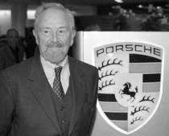
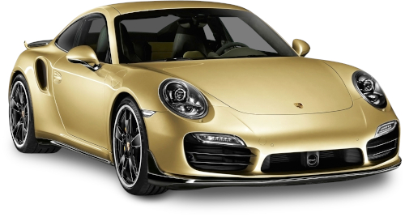
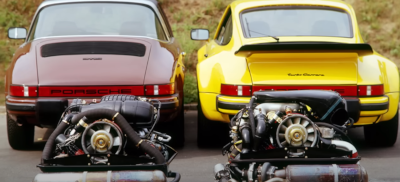
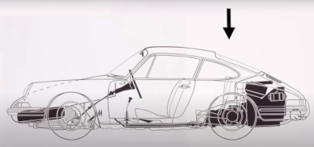

Начало
История немецкой марки «Порше» началась в 1931 году, когда Фердинанд Порше, известный конструктор того времени, поработавший в «Auto Union» и «Daimler», решил основать собственную марку автомобилей. Имея обширный опыт в работе над автомобилями для самых разных марок, а так же докторскую степень инженера, Фердинанд Порше побывал в 1930 году в СССР, где ему предложили совместно со своим конструкторским штабом переехать в молодое социалистическое государство и заняться отладкой военной промышленности. В итоге он отказался и через год, вернувшись на родину, зарегистрировал торговую марку «Dr. Ing. H.C.F. Porsche GmbH».

Porsche построена на достижениях именно
такой девиз иметь легендарный
автопроизводитель и огромное число
достижений принадлежит не просто
культовому автомобилю
а настоящий иконе рекордсмену гоночных
трасс и одному из самых почитаемых
автомобилей во все времена. Именно с
оглядкой на него другие
автопроизводителей создают свои
суперкары, именно его хотят победить на
гоночных трассах и конечно же его
фанатов пытаются переманить на свою
сторону.
ПЕРЕД ВАМИ КАРОЛЬ СУПЕРКАРОВ.
Volkswagen жук творение фердинанда
porsche стал точкой отсчета для будущих
моделей легендарной немецкой марки. На
базе жука был построен в 1948 году
первый гражданский porsche модель 356.
И наконец в начале шестидесятых появился
911 и легенда которая входит в пятерку
лучших автомобилей столетия. В новую
модель взяли от жука и porsche 356
только концепцию задне моторную
компоновку которая была очень
требовательна к умением водителя, во всем
же остальном 911 был абсолютно другой.
Опозитное шестерка сухим картером и
объемом 2 литра развивала всего 130
лошадиных сил но с весом всего в одну
тонну такая мощность позволяла
разгоняться до сотни быстрее 9 секунд а
максималка составляла 210 километров в
час.
911 для 60-х годов был невероятно
технологичен не
зависимая подвеска всех колес
дифференциал повышенного трения
5-ступенчатой кпп
дисковые тормоза авто получился легким
быстрым с особой управляемостью он
покорил сердца многих автолюбителей
своей скорости
да в том числе и коварством.
Только очень хорошие водители могли
использовать спортивный потенциал 911 на
все 100 процентов .


Из-за того что двигатель у 911 находится
сзади
именно на задние ведущие колёса
приходится 60 процентов массы автомобиля
это значит максимально возможную
загрузку задних колес с повороте на дуге
сорвать скольжение максимально
загруженные колеса намного сложнее чем
минимально загружены из-за этого задней
моторной porsche по такому параметру как
боковые перегрузки и скорость в повороте
был непобедим также загрузка задней оси
дает прекрасную динамику разгона в любых
условиях особенно при недостаточном
сцепление задних ведущих колес с дорогой.
Как только первые 911 увидели свет
потенциал автомобиля сразу раскрыли
умелые водители и профессиональные
гонщики
они быстро поняли все плюсы задней
моторные компоновки и при этом
недостатке такой конструкции в умелых
руках полностью нивелировались гонщики
обожали его как спортивный и гоночный
инструмент и показывали на нем
невероятные чудеса пилотирования я часто
видео о других автомобилях говорим что
тот или иной авто
имеют великую спортивную историю так вот
911 это бог всех спортивных и гоночных
автомобилей
столько побед сколько завоевал в разных
гонках и в разные годы этот суперкар не
имеет ни один автомобиль за всю историю
автоспорта
вы можете себе такое представить с
появлением его на гоночных трассах
конкуренты рыдали от бессилья где бы он
ни появлялся в каком бы гоночном классе
он не участвовал 911
всегда добивался успеха и если вы
выступали в гонках и против вас задней
моторный porsche вы скорее всего
проиграли.
Раздел 4
Содержимое раздела 4.